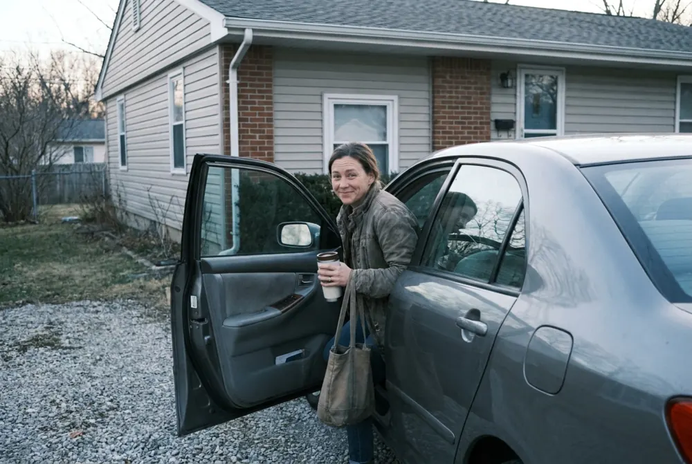

Turned Down for a Credit Card? The Car in Your Driveway Might Change That.
A thin or bruised credit file can shut a lot of doors. One newer kind of card looks at something else you already own: your vehicle. Here's how it works, and the trade-off to understand first.
Your car's value, not a cash deposit, could open a credit line.Subject to approval. Not available in all states. Your vehicle secures the account.
See how it worksThe car makes a noise on the way to work. The mechanic calls with a number. And the card you'd normally reach for either doesn't exist or is already maxed out. If that sounds familiar, you're far from alone.
When your credit history is short or has a few dents, the usual options narrow fast: denials, deposits you don't have, or short-term loans with steep costs. The frustrating part is that you might own something valuable the whole time: your car.
You've probably lived this
You fill out the application on your phone during lunch. A few seconds later, the answer comes back: not approved.
You look into a secured card, but it wants a few hundred dollars up front as a deposit, which is exactly the money you don't have right now. So the repair waits, or it goes on something with fees you'd rather not think about.
None of that means you're bad with money. A credit score is a snapshot of the past, and it often misses what you have today.
A credit score is a snapshot of the past. It often misses what you own today.

Curious whether your car could help you get a card? It only takes a few minutes to check.
See how it worksWhat's different about this kind of card
A vehicle-secured credit card works like a secured card, with one big change: instead of a cash deposit, the issuer places a lien on your car's title and uses the vehicle's value to help set your credit line. You keep the car and keep driving it. You use the card like any other credit card.
The trade-off is real and worth saying plainly: the car secures the account. If you don't pay as agreed, the issuer can take steps to collect, which can include the vehicle. It's a tool for people who can manage the payments, not a way out of debt.
The usual route
- Denied for a regular card
- A cash deposit you'd have to come up with
- Or short-term borrowing with steep costs
A vehicle-secured card
- Your car's value helps set the credit line
- No cash deposit up front
- Keep driving your car as usual
Before you apply, know this
- Approval, your credit line, rates and fees are set by the issuer and depend on you and your vehicle.
- It's only available in some states, and the vehicle usually needs to be in your name.
- Read the card's terms, including the APR and annual fee, before you accept.
How it works
- Tell them about your carThe make, model, year and mileage help estimate what it's worth.
- Get a decisionThe issuer reviews your application and your vehicle, then decides on a credit line.
- Use the card, keep the carShop and pay bills with the card while you keep driving your vehicle.
Common questions
Do I have to give up my car?
No. You keep the car and keep driving it. The issuer places a lien on the title while the account is open, so the car secures what you owe.
What happens if I miss payments?
Like any secured credit, missed payments can lead to fees, damage to your credit, and collection. Because the car secures the account, it can be at risk. Only borrow what you can repay.
Is it available everywhere?
No. Availability depends on your state, and approval depends on you and your vehicle. Check the details on the next page.
See if your car could open a credit line
Check whether this card is available where you live and what it would take, before you decide anything.
See how it works Subject to approval. Terms apply.